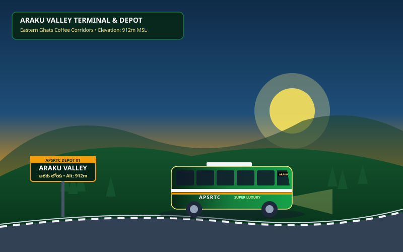
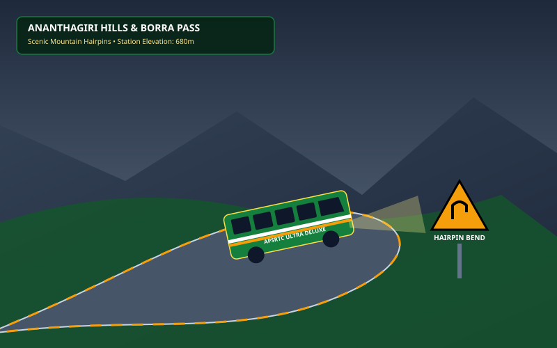
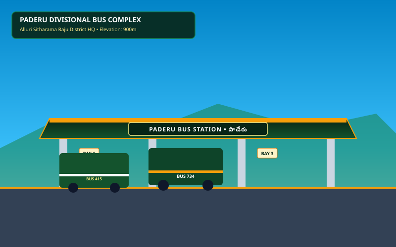
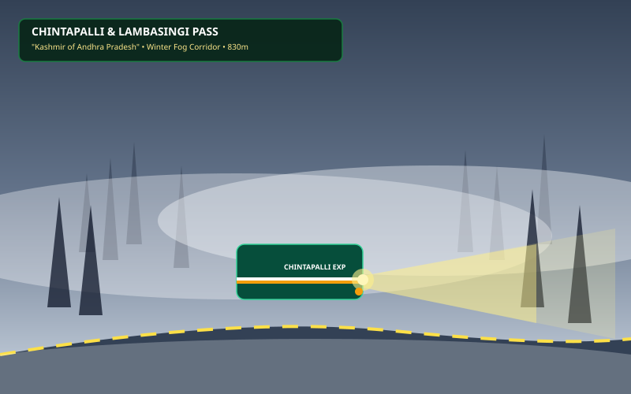
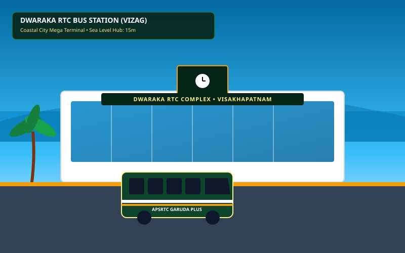
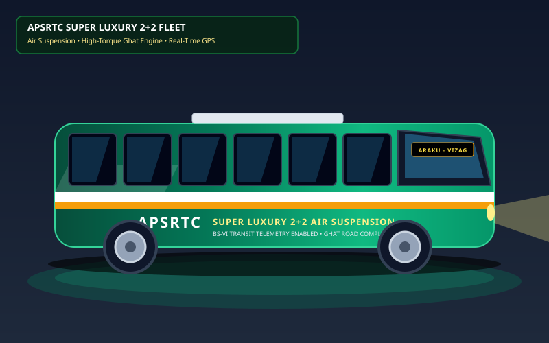
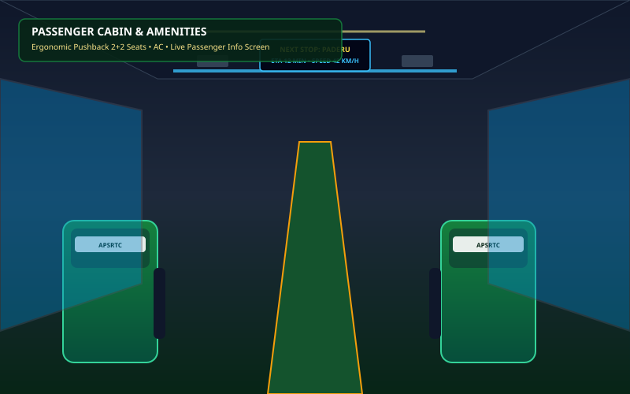
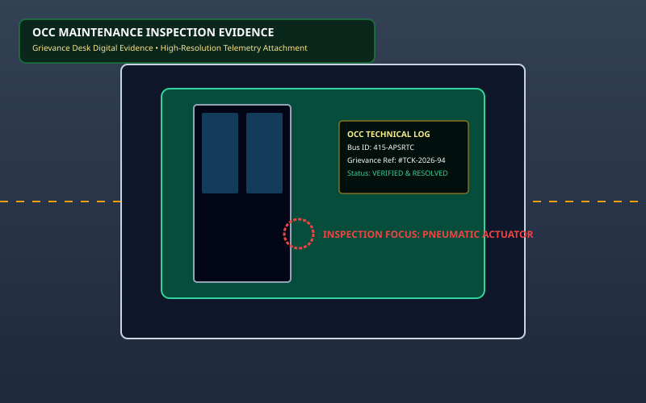

Know where your bus is in real time & 3D.
Next-generation satellite fleet tracking across the Araku - Visakhapatnam Corridor. Experience full 3D interactive bus simulation, monitor live ghat elevation, browse high-res depot galleries, and report transit grievances.
Connected to 3D spatial GPS nodes transmitting live coordinates, altitude, elevation inclination, and speed every 3 seconds.
Corridor 3D Digital Twin & Cockpit Simulator
Corridor Live Performance & Elevation Dashboard
⛰️ Corridor Mountain Elevation Profile & Real-Time Bus Altitude
Cross-section of the Eastern Ghats descent: Araku (912m) ➔ Visakhapatnam Coast (15m)
Moderate morning mist at Ananthagiri Hairpins; headlights mandatory.
Dry asphalt, regular friction coefficient, no landslides reported.
Strict 45 km/h limit on hairpins; automated speed governors active.
📡 Corridor Station Radar — Live Bus Depots
Araku ➔ Ananthagiri ➔ Paderu ➔ G. Madugula ➔ Chintapalli ➔ Anakapalle ➔ VisakhapatnamWhere do you want to travel?
Corridor Live Fleet Map
Corridor Scenic Stations & Fleet Visual Gallery
Explore high-resolution visual documentation of APSRTC depots, ghat road passes, luxury bus interiors, and terminal facilities along the Araku - Visakhapatnam route. Powered by Viewer.js with smooth zoom, rotate, slideshow, and flip controls.

DEPOT 01Araku Valley Terminal
అరకు లోయ డిపో • 912m MSLGateway to Eastern Ghats coffee valleys with scenic morning departures.

GHAT PASSAnanthagiri Hills & Borra
అనంతగిరి ఘాట్ రోడ్ • 680mChallenging hairpin bends with mountain rock cuts and waterfalls.

CENTRAL HUBPaderu Divisional Terminal
పాడేరు బస్ స్టేషన్ • 900m MSLAlluri Sitharama Raju District administrative and transit headquarters.

MIST PASSChintapalli & Lambasingi
చింతపల్లి లంబసింగి • 830mKnown as "Andhra's Kashmir" featuring winter sub-zero mist corridors.

MEGA TERMINALVisakhapatnam RTC Complex
ద్వారకా బస్ కాంప్లెక్స్ • 15m CoastalUltra-modern multi-bay super terminal connecting all Andhra corridors.

FLEET SPECSuper Luxury Fleet
సూపర్ లగ్జరీ ఎయిర్ సస్పెన్షన్High-torque hill climbing engines and automated GPS telemetry beacon.

CABIN VIEWPassenger Interior Amenities
లగ్జరీ ఇంటీరియర్ & సీట్లుErgonomic pushback seating, personal AC vents, and live digital stops display.

MAINTENANCEDepot Inspection Protocol
డిపో సాంకేతిక తనిఖీGrievance resolution evidence and rigorous pre-ghat brake inspection.